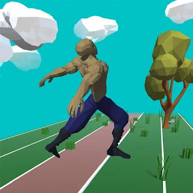
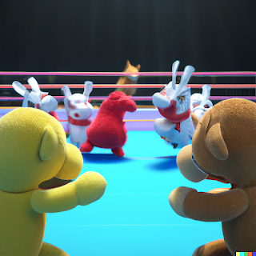

Selected work · Project notes
Other projects
A few more games and experiments from the Tilde Asterisk archive.
🏃♂️ Floppy Sprinter
Alternate between tapping the Right and Left buttons to control their steps.
Be careful not to step with
the same leg twice or with both legs together or you will trip over and flop!
Keep your rhythm or sprint as
fast as you can!
With each tap step you can break new speeds and distances.

⬇️ [Download Floppy Sprinter for Android
An infinite runner with an active rag-doll physics simulation, procedural animation twist. Floppy Sprinter is a game released to the Google Play Store in 2018 where it performed quite well. Earning a 5 star rating and approx. 100 downloads. Since then it has been taken down from the app store and it can be downloaded via various online .apk libraries for Android apps such as APK Combo.
📝 Developer Comments
Over the development of this game, I was able to develop the ideas, concepts and mechanics behind active ragdoll physics, simulation driven, procedural animation. Going on to develop the Physicanim ~* Unity Asset Package to help other game developers around the world to solve the problem of rigid body animated characters and their interactions with physics objects in the environment.Kendo Duel is a game released onto the Google Play store in 2016.# Dynasty Dispute *A.K.A.* MMORPSG~*Tilde Asterisk's Massively Multiplayer Online Role Playing Strategy Game is currently in development and has been since the end of 2023. Players build their home base on a 21 by 21 grid, arranging their resources and defences appropriately.
Defend your base from attacks from enemies and send out raiding parties of your own. Customise your player equipment and home base. Interact, trade, message, fight other players.
- Multiplayer and played in Browser.
- You play the role of a leader. Build yourself up from rags to riches. Customise your character and make decisions build your empire.
- Prepare and plan your attacks and defences . Customise your base and interact with other players. Send out parties and form beneficial relationships.
🙀 Plushie Panic
[CLICK THE BOX IN MIDDLE OF SCREEN TO EXPAND]
Your room is a complete mess! Clean up all the toys by putting them away in the toy box. Punching enemies in the head will knock out, once enemies are knocked out they are easier to grab them with both hands and carry them over to the toy box.🎛️ Controls
| Action | Keyboard & Mouse | Controller |
| ------------------ | ------------------ | ------------- |
| Move | W, A, S, D | Left Joystick |
| Left Punch / Grab | Left Mouse Button | West Button |
| Right Punch / Grab | Right Mouse Button | East Button |
| Jump | Space Bar | South Button |
| Restart Level | _ | Pause Button |
📝 Developer Comments
Plushie Panic! is a project that I worked on for a few months in mid 2020 along with two other developers. Initially the project was intended to be a multiplayer brawler, code named Toy Rumble. Making use of the [Physicanim ~*](Physicanim) Active Rag-doll System results in a fun, dynamic and more interactive-feeling gameplay. The multiplayer development was halted, and I decided to make a single player demo in order to demonstrate the concept and the stage in the development process.
Kendo Duel
Released in 2016, Kendo Duel was the first game released under the Tilde Asterisk name. Built with Unity and C#, its physics-led sword fights produced unpredictable, comedic character movement.